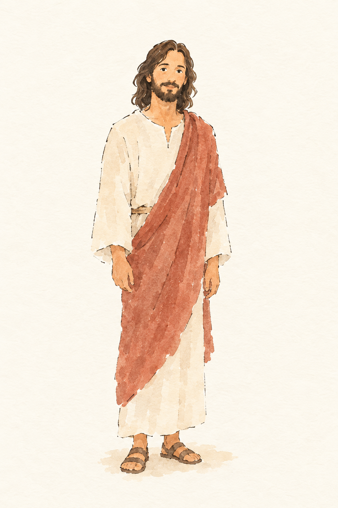
FIG-JESUS__r1v1.png ✔ gewählt: bestanden, 5 Punkte, Kern 2 Nichts Wesentliches fehlt.
Blind: A man stands alone, facing forward. His arms hang loosely at his sides. – The man may be intended to depict Jesus, but no particular Bible story or moment is identifiable.
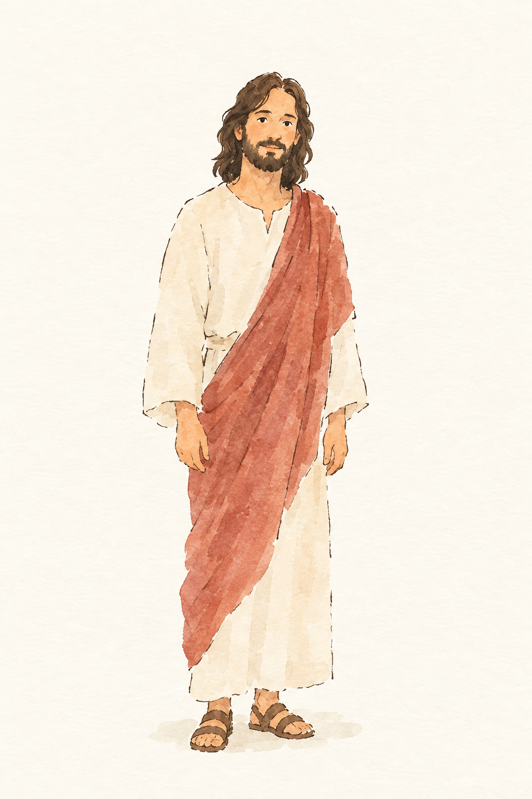
FIG-JESUS__r1v2.png: bestanden, 5 Punkte, Kern 2 Augenfarbe und Hautton nicht beschrieben.
Blind: A man stands alone facing forward. His hands hang loosely at his sides. – The figure may be intended to represent Jesus, but no particular Bible story or moment is identifiable.
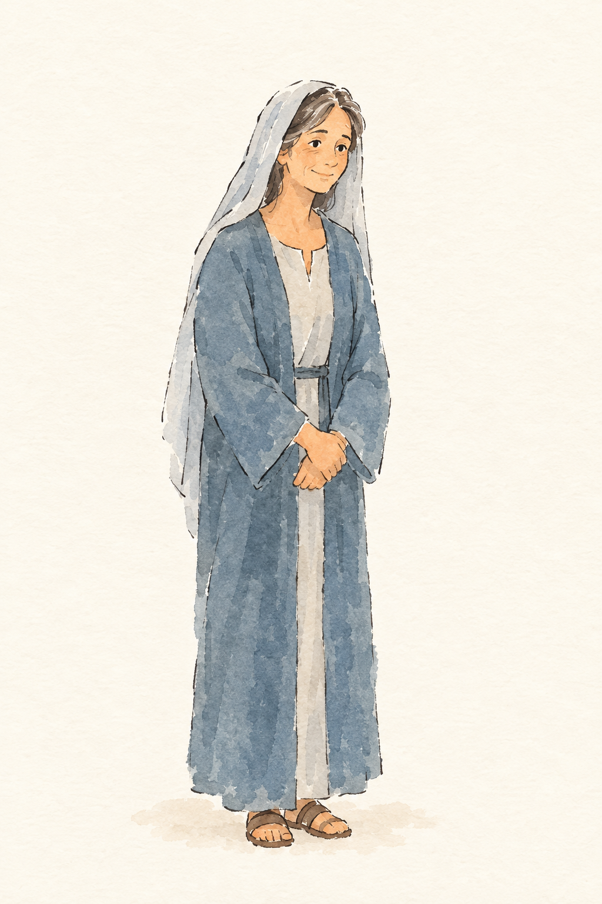
FIG-MARIA-MUTTER-JESU__r1v1.png: unklar, 4 Punkte, Kern 1 Das höhere Alter ist nur ungefähr erkennbar; Gesichtsfalten und leicht gebeugte Haltung fehlen. Der Schleier wirkt eher hell als blaugrau.
Blind: A woman stands alone with her hands folded in front of her. She smiles slightly and looks ahead. – The figure could represent a woman from a Bible story, but no specific person, story, or moment can be identified from the image alone.
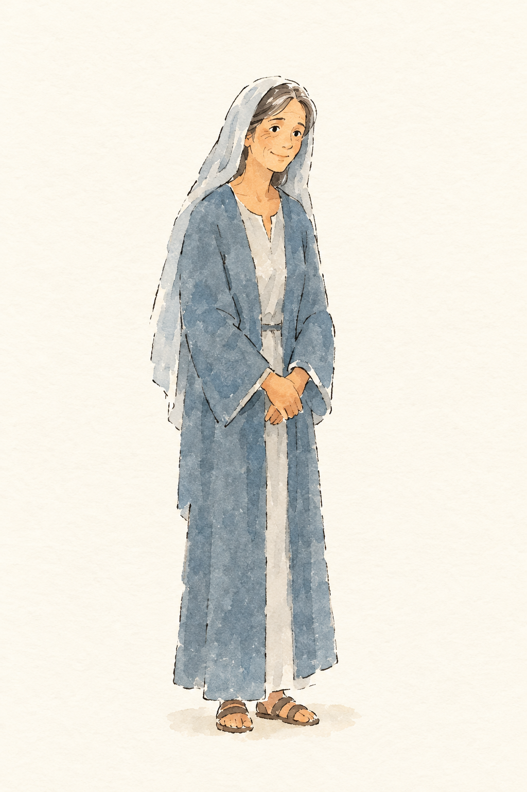
FIG-MARIA-MUTTER-JESU__r1v2.png: unklar, 4 Punkte, Kern 1 Altersunterschied zum Sohn, Gesichtsfältchen und leicht gebeugte Haltung sind nicht erkennbar; der Schleier wirkt eher hellgrau als blaugrau.
Blind: A woman stands alone with her hands clasped in front of her. She smiles gently. – No specific Bible story or moment can be identified from the image alone.
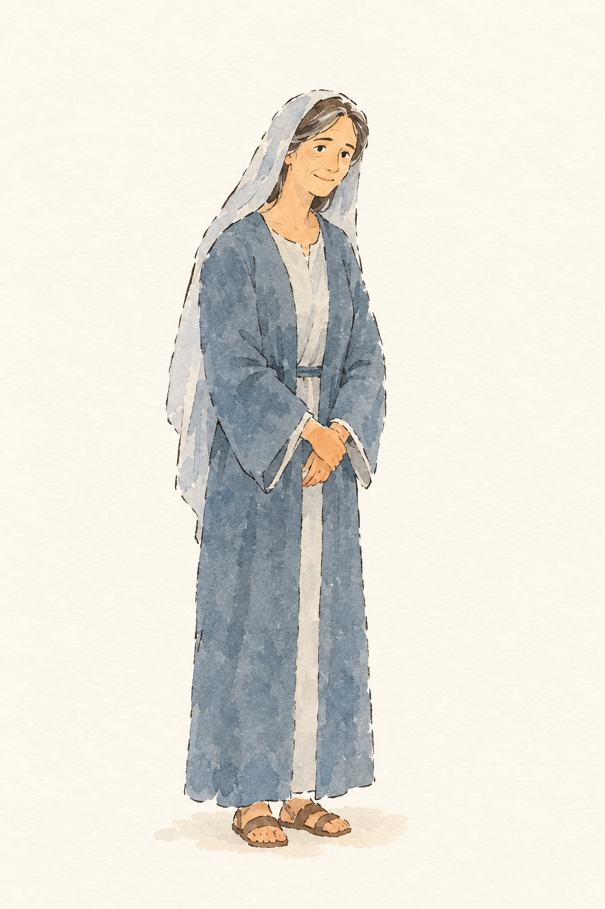
FIG-MARIA-MUTTER-JESU__r2v1.png ✔ gewählt: bestanden, 5 Punkte, Kern 2 Graue Strähnen, Gesichtsfältchen und die leicht gebeugte Haltung werden nicht ausdrücklich beschrieben; die Schleierfarbe bleibt ungenau.
Blind: A woman stands alone with her hands folded in front of her. She smiles and appears to look toward the viewer. – No particular Bible story or moment can be identified from the image alone.
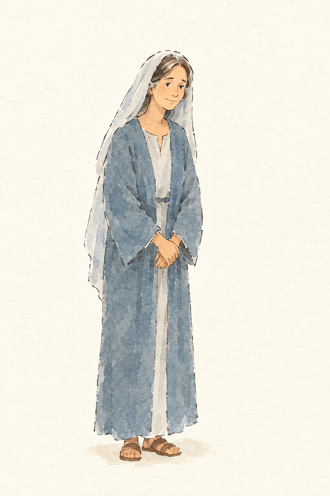
FIG-MARIA-MUTTER-JESU__r2v2.png: unklar, 4 Punkte, Kern 1 Das höhere Alter, die Gesichtsfalten und die leicht gebeugte Haltung werden nicht beschrieben; der Schleier erscheint blass statt blaugrau.
Blind: A woman stands alone with her hands clasped in front of her. She smiles gently and looks slightly to the right. – The clothing could suggest a biblical figure such as Mary, but no particular story or moment can be identified from the picture alone.
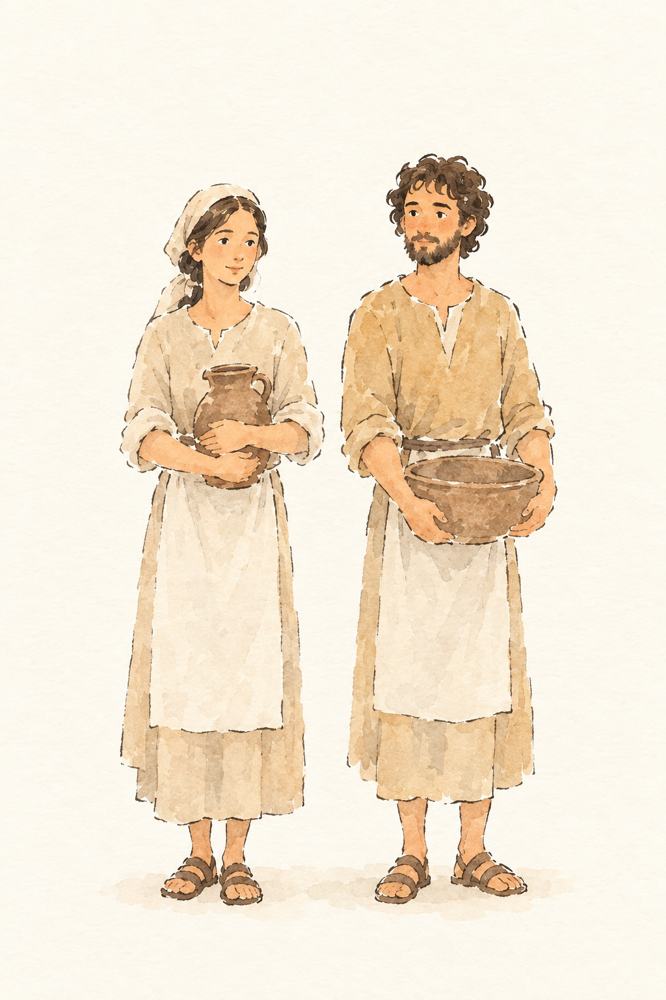
FIG-GRUPPE-DIENER__r1v1.png: durchgefallen, 4 Punkte, Kern 1 Die Frau trägt ein Kopftuch statt unbedecktem Kopf. Hochgekrempelte Ärmel und ein Gürtel bei der Frau sind nicht erkennbar; unterschiedliche Altersstufen sind unklar.
Blind: A woman and a man stand side by side, holding a jug and a basin. They glance toward each other. – No specific Bible story or moment can be identified confidently from the visible details.
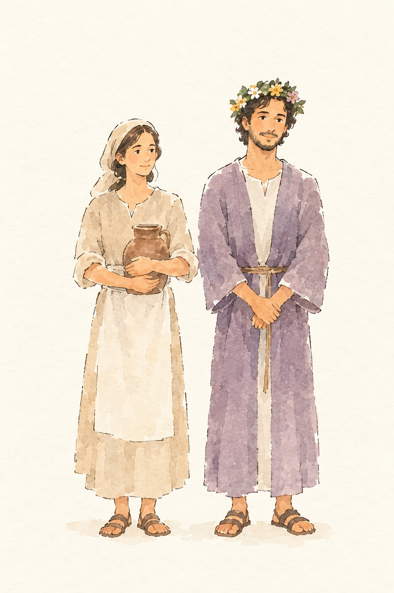
FIG-GRUPPE-DIENER__r1v2.png: durchgefallen, 4 Punkte, Kern 1 Nur die Frau trägt eine helle Schürze; sie hat ein Kopftuch. Der Mann trägt eine purpurne Robe und einen Kranz. Unterschiedliche Altersgruppen sind nicht erkennbar.
Blind: A woman and a man stand side by side. She holds a jar and glances toward him, while he clasps his hands and faces forward. – No specific Bible story or moment can be identified from the image alone.
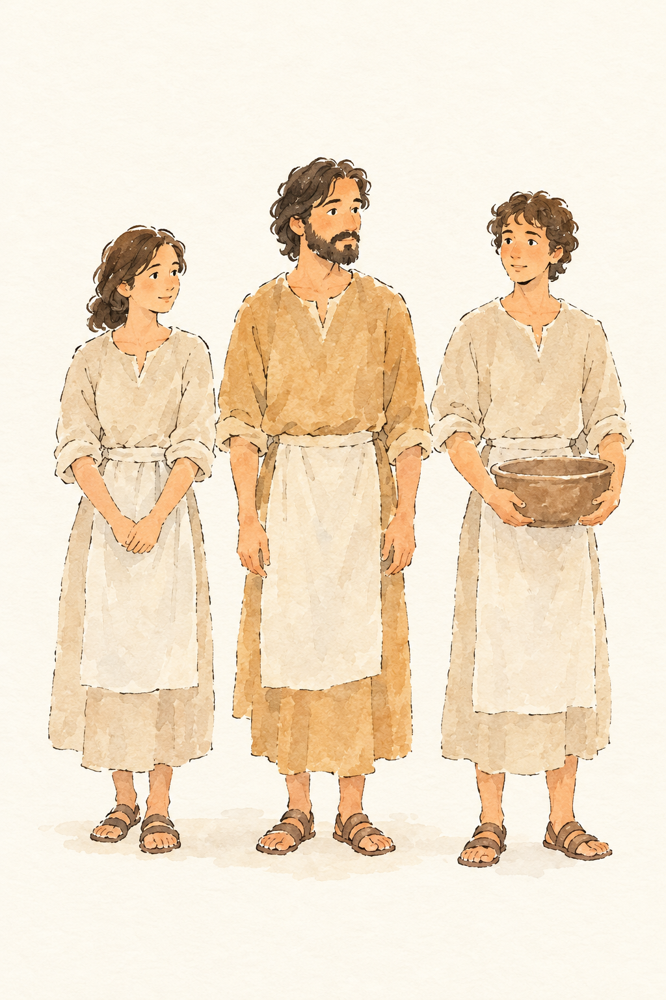
FIG-GRUPPE-DIENER__r2v1.png: durchgefallen, 3 Punkte, Kern 1 Gürtel und hochgekrempelte Ärmel werden nicht erwähnt.
Blind: Three people stand side by side, with the person on the right holding a bowl. The woman looks toward the central man, who looks toward the young man holding the bowl. – No specific Bible story or moment can be identified confidently from the visible details.
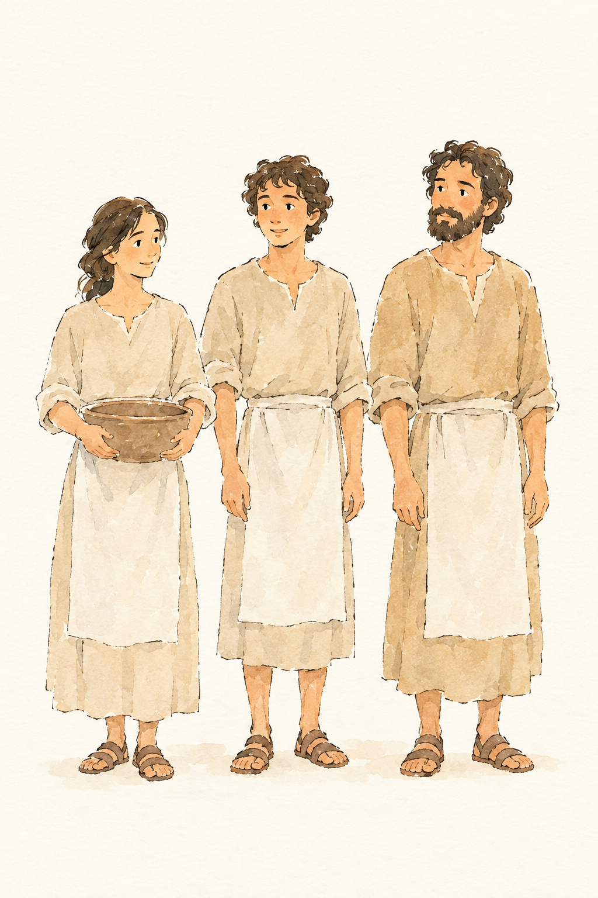
FIG-GRUPPE-DIENER__r2v2.png: durchgefallen, 3 Punkte, Kern 1 Gürtel und hochgekrempelte Ärmel werden nicht erwähnt.
Blind: Three people stand side by side. The woman holds a bowl, while the two men keep their hands at their sides. – No specific Bible story or moment can be identified confidently from the visible details.
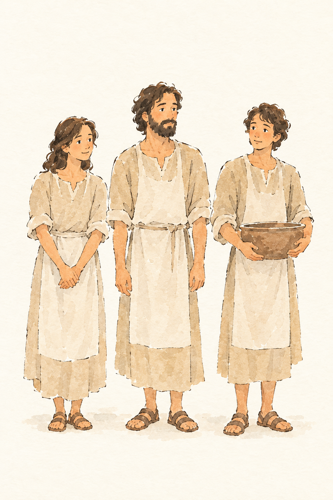
FIG-GRUPPE-DIENER__r3v1.png: durchgefallen, 3 Punkte, Kern 1 Gürtel und hochgekrempelte Ärmel werden nicht erwähnt.
Blind: Three people stand side by side, with the two on the right looking toward one another. The person on the right holds a large bowl while the person on the left clasps her hands. – No particular Bible story or moment can be identified confidently from the visible details.
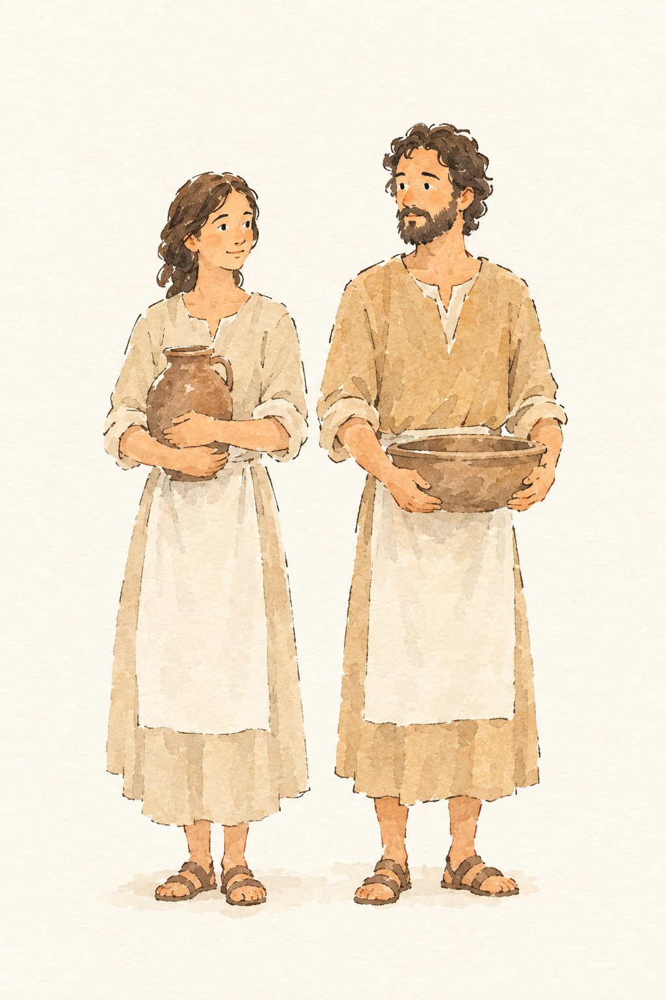
FIG-GRUPPE-DIENER__r3v2.png: durchgefallen, 4 Punkte, Kern 1 Gürtel und hochgekrempelte Ärmel werden nicht erwähnt.
Blind: The woman and man stand side by side, looking toward each other. She holds a jug while he carries a basin. – No particular Bible story or moment can be identified reliably from the visible details.
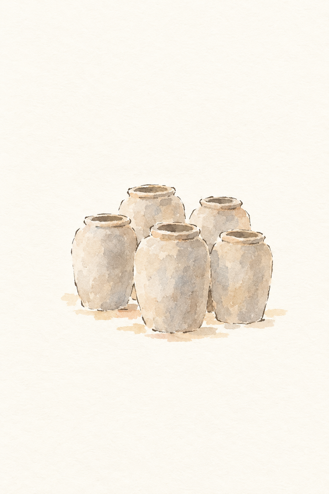
FIG-OBJ-KRUG-WASSER__r1v1.png: durchgefallen, 2 Punkte, Kern 1 Nur fünf statt sechs Krüge; Steinmaterial und Hüfthöhe sind nicht eindeutig erkennbar.
Blind: Five jars are standing together. No people or activity are shown. – The jars could suggest the wedding at Cana, where Jesus turned water into wine, but the image does not establish a particular story or moment. Five jars are visible, whereas the biblical account mentions six.
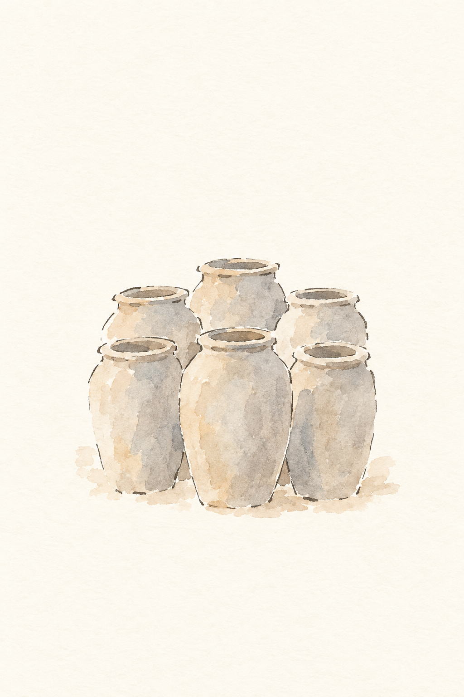
FIG-OBJ-KRUG-WASSER__r1v2.png: unklar, 2 Punkte, Kern 1 Steinmaterial und hüfthohe Größe sind nicht erkennbar; die Farbe wirkt beige statt hellgrau.
Blind: Six jars stand together. No people or active event are shown. – Possibly the six water jars at the wedding at Cana, where Jesus turns water into wine. No specific moment or transformation is visible, so the connection is uncertain.
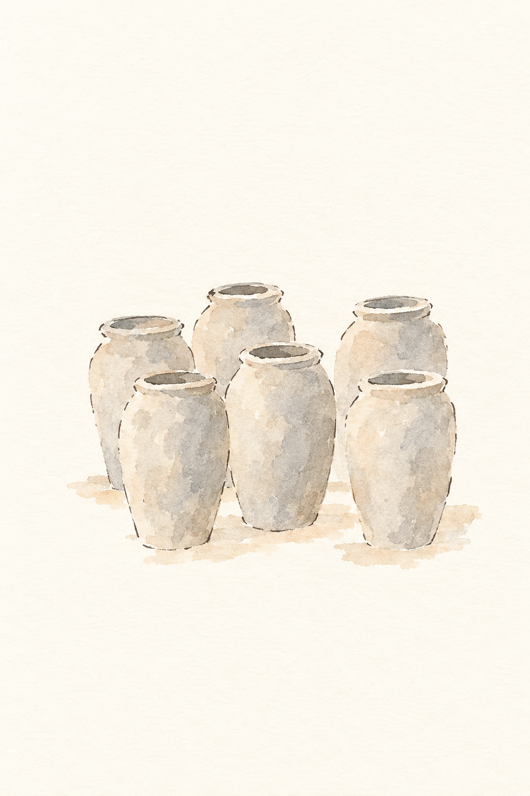
FIG-OBJ-KRUG-WASSER__r2v1.png: unklar, 2 Punkte, Kern 1 Das Steinmaterial und die Hüfthöhe sind nicht erkennbar.
Blind: Six jars stand together. No people or activity are shown. – Possibly the six stone water jars at the wedding at Cana, where Jesus turned water into wine. No particular moment of the story is visible.
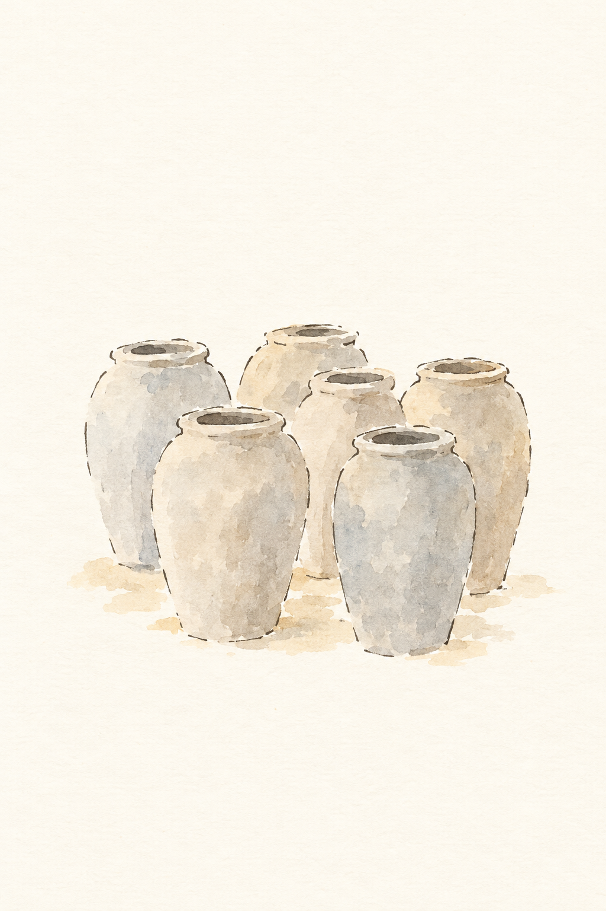
FIG-OBJ-KRUG-WASSER__r2v2.png: unklar, 2 Punkte, Kern 1 Das Steinmaterial und die Hüfthöhe sind nicht erkennbar; die Krüge wirken teils beige statt hellgrau.
Blind: Six jars stand close together, some partly obscuring others. No people or activity are shown. – The six jars could suggest the stone water jars at the wedding at Cana, where Jesus turned water into wine, but no specific moment or story is confirmed by the picture.
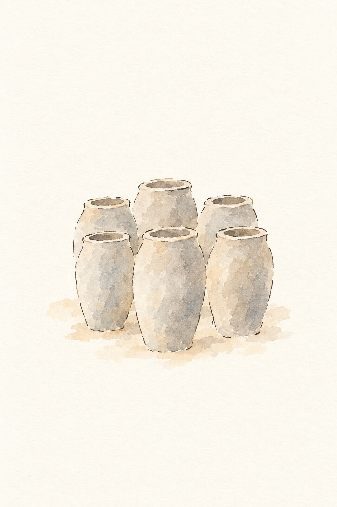
FIG-OBJ-KRUG-WASSER__r3v1.png: unklar, 2 Punkte, Kern 1 Steinmaterial, blassgraue Farbe und hüfthohe Größe fehlen.
Blind: Six jars stand together, with three partly obscured behind the others. No people or activity are shown. – The six jars could suggest the stone water jars at the wedding at Cana, where Jesus turned water into wine. No exact moment or connection to the story can be confirmed from the picture alone.
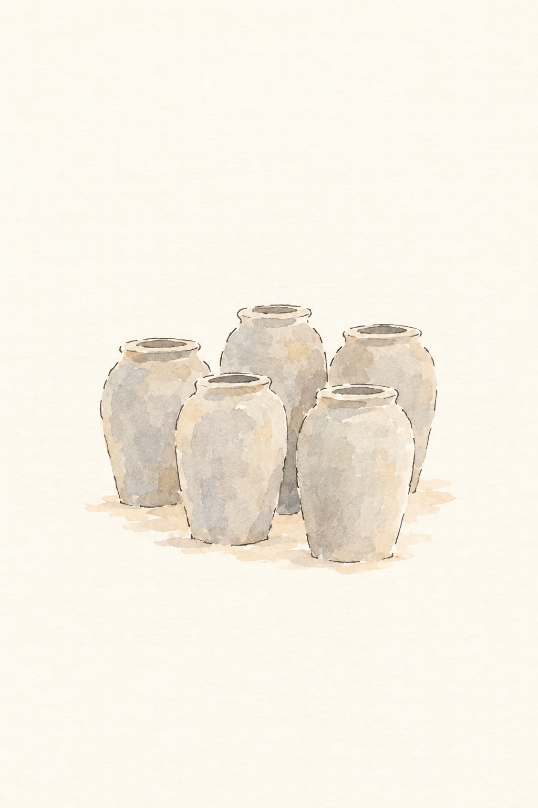
FIG-OBJ-KRUG-WASSER__r3v2.png: durchgefallen, 2 Punkte, Kern 1 Nur fünf statt sechs Krüge; Steinmaterial und Hüfthöhe sind nicht erkennbar.
Blind: Five jars stand together. No people or active events are shown. – The jars could suggest the water jars at the wedding at Cana, but there is not enough visible information to identify a story or a specific moment.